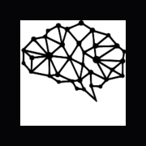

UI wordmark — default · nav / chrome / dense surfaces
OneBrain
Primary lockup — brand / hero / cover only · gradient on the word once
OneBrain
Your AI Thinking Partner · onebrain.run
Every mark below is a real package file from
assets/ and build/. The vector mark (brain.svg = logo.svg)
is the OneBrain source brain, now carrying a live neuron-spark layer —
every one of its 36 nodes flashes on its own random cycle (frozen to a steady glow under
prefers-reduced-motion). The two raster marks —
favicon.ico and the app-icon PNG — are rendered from brain.svg so the
browser-tab and home-screen marks are the brand brain, not the framework's default starter favicon.
The mark is identical in both — only the
wordmark differs. The gradient lives in the mark by default and spills onto the word only in the
primary lockup; UI chrome always uses the solid-white wordmark (source-true .brand). See
DESIGN.md §8.

Chakra Petch
JetBrains Mono
Inter